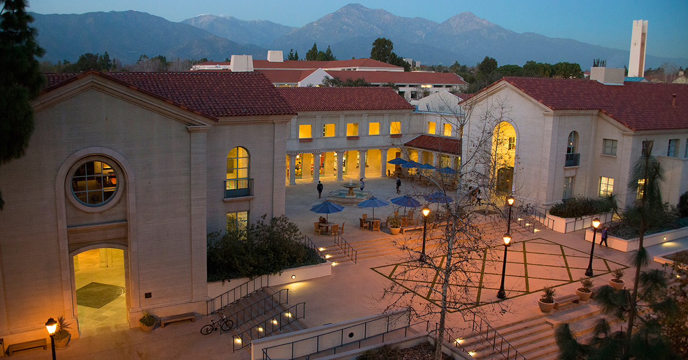

An attempt at keeping track of everything I do :).
Intro
What to tell you about me ... that's a tough question. At 7 years old I both picked up my first tennis racket and wrote my first Scratch program, making a little orange cat walk 5 steps across the screen. It was then that I developed a passion for a 12th century sport and what would later lead me to build an 8-bit computer on breadboards. I'm glad you're here to learn a little bit about me. Welcome!
Education

I am attending Pomona College in beautiful Claremont, CA, pursuing a double major in Computer Science and Applied Mathematics. I'm also a captain of the Pomona-Pitzer men's varsity tennis team, competing in both singles and doubles at the highest level of DIII tennis, and am a TA for multiple upper division courses.
Computer Engineering Courses
RISC-V System-on-Chip Design
Microprocessor Based Systems, TA Fall 2024
Very Large Scale Integration (VLSI)
Real Time Systems, TA Spring 2025
Computer Science Courses
Usable Security and Privacy
Algorithms
Computer Systems, TA Fall 2024
Programming Languages
Intro to Languages and Theory
Discrete Math and Functional Programming
Data Structures and Advanced Programming, TA Spring 2024
Mathematics Courses
Abstract Algebra
Number Theory and Cryptography
Differential Equations and Modeling
Linear Algebra
Vector Calculus
Probability
Principles of Real Analysis I
Research & Capstone
Ultra High Speed Imaging of Cavitation Bubbles in LASIK Eye Surgery (Harvey Mudd Clinic)
PCB Design for Autonomous Robots (Mobile Robotics Lab)
Multicore Fiber Bundles for Neuroscience (Optics Lab)
Relavant Courses
Intro Engineering Design & Manufacturing with Lab
Introductory Classical Mechanics
Introductory Electricity and Magnetism
Big Ideas in Modern Physics with Lab
Awards
Pomona College Scholar
National Merit Finalist
ITA Scholar Athlete Award
Projects
8-bit Computer
Ever since I was a young child and I wrote my first scratch program, I have questioned how computers actually understand code. C code becomes assembly code, then machine code, which is just binary - but what does a computer do with that? To answer this question, I built a fully programmable 8-bit Breadboard (and later PCB) computer based on the SAP-1 Architecture using basic Logic Gates.
VLSI Transistor Level CPU
The 8-bit breadboard and PCB computers shown above were almost enough for me, there was just one abstraction level left - the logic gates. I could understand how each one worked, but how were they created? I not only questioned how an 8 bit register was functioned from boolean logic, but also how an AND gate was built from transistors, and even how the transistors were actually made. Enter VLSI.
Above is the layout I created for an 8 bit register (the slideshow is just zooming in on a portion of it), demonstrating the exact details of the silicon, including where to N-dope, where to P-dope, where to draw wires, where to move between metal layers, etc. Continued details regarding the rest of the project as well as its development can be found on the project log.
Phototransistor Camera Sensor
NeoObscura is a fully functional custom camera sensor built from scratch with 1200 phototransistors, equipped with hardware accelerated image compression. A 32 bit ARM Cortex-M4 MCU works together with an iCE40 FPGA to produce a 40x30 pixel image. More details about the design process, as well as additional media can be found on the project's homepage.
FPGA Based AES-128 Hardware Accelerator
This is a SystemVerilog implementation of an AES-128 hardware accelerator. In order to fit the constraints of a small FPGA (~5k LUTs), we use a sequential implementation which uses 2443 LUTs. The hardware accelerator accepts plaintext and a key via an SPI channel connected on an MCU, then outputs a ready signal along with the ciphertext back to the MCU via SPI. More details can be found at the following repo.
Latent Diffusion
A paper I wrote exploring a state of the art image generation technique: Latent Diffusion. It describes methods used to generate images from text and presents a new way to expand the conditioning mechanisms to a new space: audio. The result is a successful model capable of generating high quality images from human speech.
Other Exploration
School Security - A security system with built in AI capabilities to identify intruders on school campuses using Google's Teachable Machines and Javascript
Music Lights - LED light strip synced to live music using IR control with a RaspberryPi and Python
RFID Door Lock built with RaspberryPi
SendHelp - Safety app developed for iOS using Swift Storyboards
COVID Tracker - Covid-19 tracking app developed for iOS using SwiftUI
In the summers of 2023, 2024, and 2025 I interned at Apple as a Battery Firmware Engineer. I got to work with embedded systems to contribute to firmware functionality for interacting with the Battery Management System chip on iPhone and Apple Watch. This includes real time system development for many features, including secure update, driver development, and I2C communication.
During my time at Apple, I also had the opportunity to work on a Platform Architecture Security team, developing a new architecture to provide secure signing and attestation for emerging chips.
Arcadia Tractor
From June 2021 - August 2022 I worked as a Software and Hardware Engineer at Arcadia Tractor, an autonomous vehicle startup. I designed a battery management system (BMS) for a self driving golf range picker, developing skills in ROS through Python and C, as well as understanding hardware communication protocols such as UART, I2C, and CAN Bus.
Cisco Systems
During summer of 2020, I got the opportunity to participate in a Product Management Internship at Cisco Systems. This is where I was first introduced to the RaspberryPi, the powerful credit card sized computer. Based on resesearch conducted with teams to see what was needed during the Covid-19 pandemic, I prototyped a new video conferencing product: Cisco Telepresence - Home Edition.